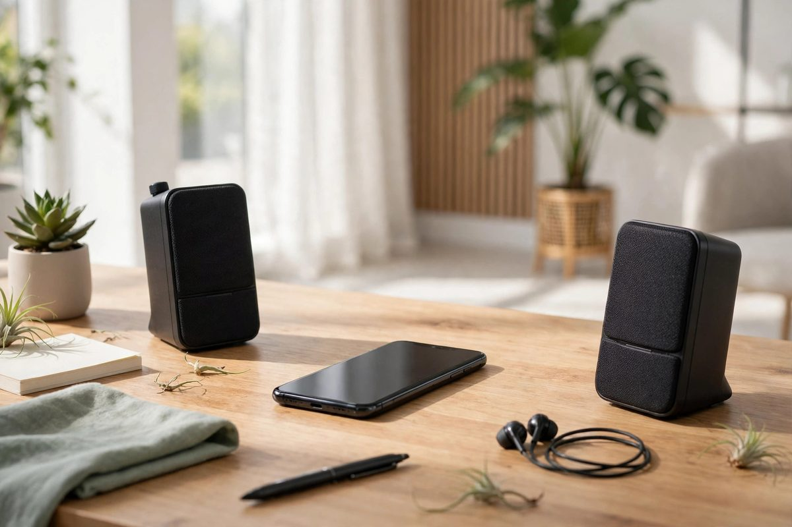

Left and Right Channel Test for Phone Speakers

Most modern phones have stereo speakers: two speakers that work together to create a sense of left and right in the sound. When both are working, music feels wide and spacious, and voices sound centred. When one side is quiet, blocked, or faulty, the sound collapses to one side, music loses its depth, and you may feel like the phone is only half working. A left and right channel test plays sound through one channel at a time, so you can check each side separately and find out whether the problem is in one speaker or in the audio itself. This guide explains how stereo works on a phone, how to run the test, and what the results mean.
How Stereo Works on a Phone
Stereo sound has two channels, left and right, and each channel carries slightly different audio. On a phone, the two channels usually come from two separate speakers. On most phones, one speaker is at the bottom edge and the other is the earpiece at the top, which doubles as a second speaker for media. Some phones have two bottom speakers, and a few have a speaker on each end. When you hold the phone sideways to watch a video, the bottom speaker becomes one side and the earpiece becomes the other, which is why videos sound wider in landscape mode.
Because the two speakers are in different places and are different sizes, they do not always sound identical. The earpiece speaker is usually smaller and quieter than the bottom speaker, so a small difference in volume between the two sides is normal. What is not normal is one side being very quiet, muffled, distorted, or completely silent. That usually means one grille is blocked, one speaker is damaged, or the audio balance setting has been changed.
How to Run a Left and Right Channel Test
Use the sound test tool to play the channel tests. Set up properly first, or the results will be misleading. Go somewhere quiet and remove the phone case, then turn off Bluetooth so the sound comes from the phone speakers, not from headphones. Set the media volume to about 70 percent and hold the phone in landscape mode, sideways, so the two speakers are to your left and right. Play the left channel test: you should hear the tone clearly from the left speaker only. Play the right channel test the same way, then play a tone through both channels and check that the sound feels centred, not pulled to one side.
Listen carefully to the volume and the clarity of each side. A small difference is normal, because the two speakers are different sizes, but a large difference is not. If you are unsure, cover one speaker gently with your finger while the other plays, so you can judge each one on its own. You can also use the volume test tool to compare the two sides at different volume levels.
What the Results Mean
The pattern tells you where the problem is:
- Both channels sound clear and roughly equal: The speakers are healthy. If music still sounds odd, the cause is probably the audio file, the app, or a sound setting.
- One channel is quieter but still clear: The quieter speaker's grille is very likely blocked with dust or water. Clean that grille and test again.
- One channel is muffled while the other is clear: Dust or water is blocking one grille. Clean it gently with a soft brush and run a cleaning tone.
- One channel is distorted or crackly: That speaker may be damaged, or debris may be sitting on its diaphragm. Cleaning may help if it is debris, but not if the speaker is damaged.
- One channel is completely silent: That speaker or its connection has failed, or the audio balance setting is set all the way to one side. Check the balance setting first, then clean, then consider a repair.
Cleaning One Blocked Speaker
If the test shows that one side is blocked, clean that speaker first, then test again. Brush the grille gently with a soft, dry brush, use sticky tape to lift surface dust, and run a cleaning tone with the speaker cleaner tool while holding that speaker facing down. Clean the other speaker too, because dust rarely affects only one grille for long. Our guides on cleaning an iPhone speaker and cleaning a Samsung or Android speaker give the full step-by-step method for each type of phone.
If cleaning does not fix a one-sided problem, and the balance setting is centred, the speaker itself may be damaged or its connection may have come loose, often after a drop. Sound-based cleaning cannot fix a damaged speaker or a loose connection. A repair shop can test each speaker separately and replace the faulty one. If the phone is still under warranty, check your cover before paying for a repair.
Frequently Asked Questions
Why does sound only come out of one side of my phone?
The most common causes are a blocked grille on one side, the audio balance setting favouring one side, or a faulty speaker. Check the balance setting first, then clean the quiet speaker.
Is it normal for one phone speaker to be quieter than the other?
Yes, a small difference is normal, because the earpiece speaker is smaller than the bottom speaker. A large difference, distortion, or silence on one side is not normal.
Can a channel test fix my speaker?
No. The test only shows you which side has the problem. Cleaning can fix a blocked grille, but a damaged speaker needs a repair.
Related guides
You may also find these guides useful: